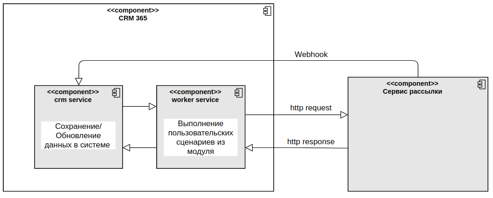

Интеграция с Unisender является примером реализации интеграции с любым другим сервисом рассылок. Подробнее о создании интеграции читайте в справке ELMA365 TS SDK в статье «Интеграция с сервисами рассылок».
Алгоритм необходимо описывать в создаваемом модуле по пути Администрирование > Модули > Ваш модуль > Методы API. Данные email-адресов должны находиться в ELMA365.
Управление рассылками осуществляется в разделе Маркетинг, в котором хранятся данные о подписчиках, которым можно отправлять электронные письма.
Рассмотрим компоненты, которые используются для работы модуля интеграции с сервисом рассылок.
Приложения в ELMA365
Для работы интеграции используются следующие приложения из раздела Маркетинг:
- приложение Категории предпочтений — необходимо для отправки рассылки по определённой тематике.
- страница Подписчики — выводит список контактов, которые подходят под следующие условия:
- контакт не удалён, то есть системному полю
__deletedAtприсвоено значениеnull; - в карточке контакта заполнено поле Рабочая почта;
- в карточке контакта заполнено поле Категория предпочтений.
- контакт не удалён, то есть системному полю
Если хотя бы одно из условий не удовлетворено, контакт не отобразится на странице Подписчики;
- приложение Списки рассылок — в нём формируются и хранятся списки электронных адресов для отправки рассылки;
- приложение Шаблоны писем — содержит шаблоны для оформления писем из рассылки. Шаблоны создаются на стороне сервиса Unisender и импортируются в систему;
- приложение Рассылки — в нём создаются рассылки для отправки подписчикам. При создании рассылки необходимо выбрать модуль интеграции для рассылки.
Таблицы в базах данных
Ниже приведён список таблиц, используемых модулем интеграции для рассылок писем.
_marketing:_campaigns— рассылки;_marketing:_mailing_lists— списки рассылок;_marketing:_preferences— категории предпочтений;_marketing:_subscribers— подписчики;_marketing:_sync_subscribers— синхронизируемые подписчики;_marketing:_templates— шаблоны писем.
Модели данных в модуле
- CRM_Marketing_ActionType;
- CRM_Marketing_CampaignStatus;
- CRM_Marketing_CampaignType;
- CRM_Marketing_DeliveryStatus;
- CRM_Marketing_SubscriberStatus;
- CRM_Marketing_CampaignStats;
- CRM_Marketing_CreateCampaignRequest;
- CRM_Marketing_CreateCampaignResponse;
- CRM_Marketing_ImportTemplate;
- CRM_Marketing_Action;
- CRM_Marketing_UnsubscribeAction;
- CRM_Marketing_UpdateCampaignAction;
- CRM_Marketing_UpdateDeliveryStatusAction.
Алгоритмы и последовательность
Для создания интеграции в модуле нужно реализовать следующие методы:
CRM_Marketing_ImportTemplates;CRM_Marketing_ExportContacts;CRM_Marketing_PrepareCampaign;CRM_Marketing_CreateCampaign;CRM_Marketing_GetCampaignStats;CRM_Marketing_ParseWebhookRequest;CRM_Marketing_GetTemplateHTML— необязательный метод. При его отсутствии в карточке шаблона письма не будет отображаться предпросмотр сообщения.
Рассмотрим алгоритм работы модуля.
1. Определение подписчиков.
В сервисе CRM создан обработчик событий создания, изменения и удаления элементов приложения Контакты. При вызове этого обработчика проверяются условия, по которым контакт может являться подписчиком.
Если при проверке найдены контакты с одинаковыми электронными почтами, по умолчанию подписчиком становится последний созданный контакт. На странице настроек раздела Маркетинг вы можете изменить это правило, и тогда подписчиком будет становиться контакт, в карточке которого указано больше данных. Подробнее об этом читайте в статье «Настроить раздел „Маркетинг“».
2. Синхронизация контактов с сервисом рассылок Unisender.
Для синхронизации контактов с сервисом рассылки в модуле используется метод CRM_Marketing_ExportContacts. С его помощью контакты отправляются в сервис перед созданием рассылки. Также этот метод может вызываться в фоновом режиме каждый раз, когда в системе появляются 20 подписчиков, которые не синхронизированы с сервисом рассылки.
Фоновая синхронизация нужна, чтобы ускорить процесс отправки рассылки, не проводя обновления большого количества контактов.
Количество синхронизации подписчиков в фоновом режиме можно настроить в поставке ELMA365 On-Premises с помощью изменения значения переменной окружения ELMA365_CRM_SYNC_SUBSCRIBERS_MIN_SIZE.
При синхронизации подписчиков для каждой категории предпочтений на стороне Unisender создаётся новый список контактов.
3. Импорт шаблонов.
Для создания рассылки необходимо выбрать шаблон письма. Этот шаблон создаётся на стороне Unisender и импортируется в ELMA365 с помощью приложения Шаблоны писем.
После запуска импорта в модуле вызывается метод CRM_Marketing_ImportTemplates, который получает шаблоны писем и сохраняет их в системе.
4. Создание рассылки.
При создании рассылки выполняется синхронизация контактов, которые указаны в списке рассылок. Затем в модуле вызывается метод CRM_Marketing_PrepareCampaign, в котором реализована логика подготовки списка контактов для отправки в сервис рассылок.
Далее вызывается метод CRM_Marketing_CreateCampaign, который отправляет подготовленные данные в сервис рассылок. Так как при создании рассылки могут быть применены фильтры для сегментации подписчиков, контакты отправляются в сервис по API в поле contacts. Подробнее об этом читайте в официальной документации сервиса Unisender.
Если список подписчиков успешно сформирован, в разделе Маркетинг создаётся элемент приложения Списки рассылок. В случае неуспеха на форме создания списка отображается ошибка.
При открытии карточки списка рассылок в модуле с помощью метода CRM_Marketing_GetCampaignStats запрашиваются данные о рассылке.
5. Получение информации о рассылке.
Если в настройках модуля Unisender подключён вебхук для отладки, из сервиса рассылок можно получать данные о его работе.
Сервис рассылки отправляет данные в систему, вызывая url сервиса CRM, который запускает в модуле метод CRM_Marketing_ParseWebhookRequest. Этот метод определяет, какие действия были переданы сервисом рассылки, и возвращает информацию в сервис CRM в определённом формате.
Например, у модуля Unisender обрабатываются следующие события:
- изменение статуса рассылки;
- изменение статуса доставки письма;
- удаление контакта из рассылки если контакт отписался от рассылки.
Компоненты
Ниже приведена схема компонентов, используемых в модуле интеграции.

Аутентификация и авторизация
Авторизация с сервисом рассылок осуществляется с помощью API-ключа, который можно получить в личном кабинете Unisender. Этот токен сохраняется в настройках модуля и используется в логике авторизации с сервисом рассылок, когда необходимо совершить действие по API. Подробнее о подключении модуля читайте в статье «Модуль интеграции с Unisender».
Сервисы, отвечающие за работу с Unisender
Сервис CRM вызывает методы в модуле. Код модуля выполняется в сервисе worker, из которого в сервис CRM возвращаются ошибки или полученные данные.
Ограничения Unisender
- /importContacts — максимальное количество пользовательских полей равно 50. Таймаут на один вызов составляет 30 секунд с момента полной передачи запроса на сервер. Если по истечении таймаута ответ не получен, рекомендуется сделать до двух повторных попыток. Если ответ всё равно не получен, рекомендуем обратиться в техническую поддержку;
- /createEmailMessage — максимальный размер email-сообщения — 8 МБ;
- /createCampaign — ограничение в post запросе равно 32 МБ ~ 1 млн. email длиной до 30 символов. Лимит на количество запросов от одного API-ключа или IP-адреса — 100 запросов/60 секунд.
Одно и то же сообщение можно отправлять несколько раз, но отправка не должна происходить раньше, чем через час. Время выполнения запроса пропорционально количеству контактов, таймаут для рассылок до 50 000 адресов составляет 30 секунд, при большем количестве увеличивается. Если ответ отсутствует, по истечении таймаута рекомендуется произвести не более двух повторных попыток.
Если повторный запрос заканчивается сообщением об ошибке с кодом 'campaign_already_exists', значит одна из предыдущих попыток сработала с запозданием.